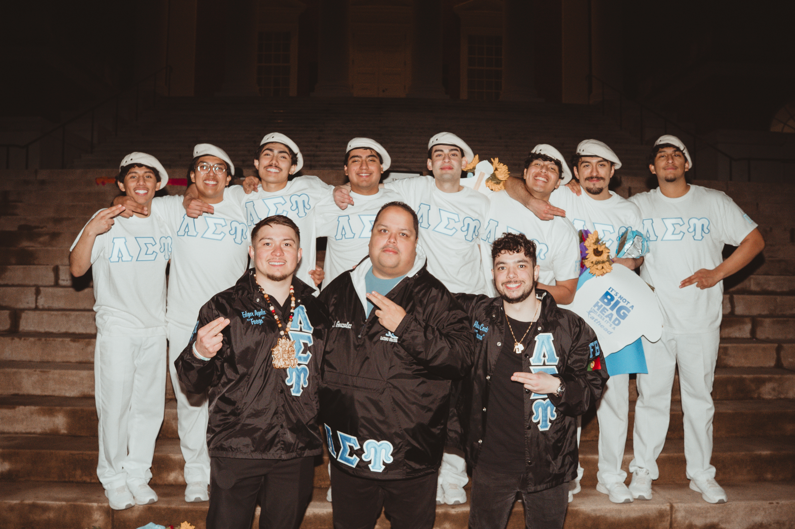

Rooted in culture,
driven by purpose
Since April 5, 1979, Lambda Sigma Upsilon has stood as a home for Latino voices in higher education — built on unity, shaped by sacrifice.

How it all began
Seeds of Change at Rutgers
At Livingston College, Latino students felt overlooked and underserved. Protests and sit-ins — including the occupation of Kilmer Library — pushed the administration to recognize their needs.
It was here that our founders met and connected over shared frustrations and a vision for change.
A New Vision for Brotherhood
That spring, students came together to build what Greek life didn't offer — a brotherhood rooted in Latin American heritage, including Indigenous and Afro-Latino traditions.
They envisioned a Latino Social Fellowship to unify and empower their community on campus.
Lambda Sigma Upsilon Is Born
On April 5, in Tillett Hall on Rutgers' Livingston Campus, Lambda Sigma Upsilon Latino Social Fellowship was officially established by twenty founding fathers.
They adopted the motto Latinos Siempre Unidos — Latinos Always United.
From Fellowship to Fraternity
The fellowship became Lambda Sigma Upsilon Latino, Incorporated — the second Latino fraternity in Greek life — extending its brotherhood to colleges and universities nationwide.
A Lifelong Brotherhood
More than a collegiate organization, Lambda Sigma Upsilon is a lifelong brotherhood dedicated to community uplift, cultural preservation, and personal growth.
We honor the past, embrace our roots, and build a legacy for future generations of Upsilon men and leaders.
Our twenty founding fathers
Lambda Sigma Upsilon was built on the vision, leadership, and commitment of these founding members.
Quick Facts